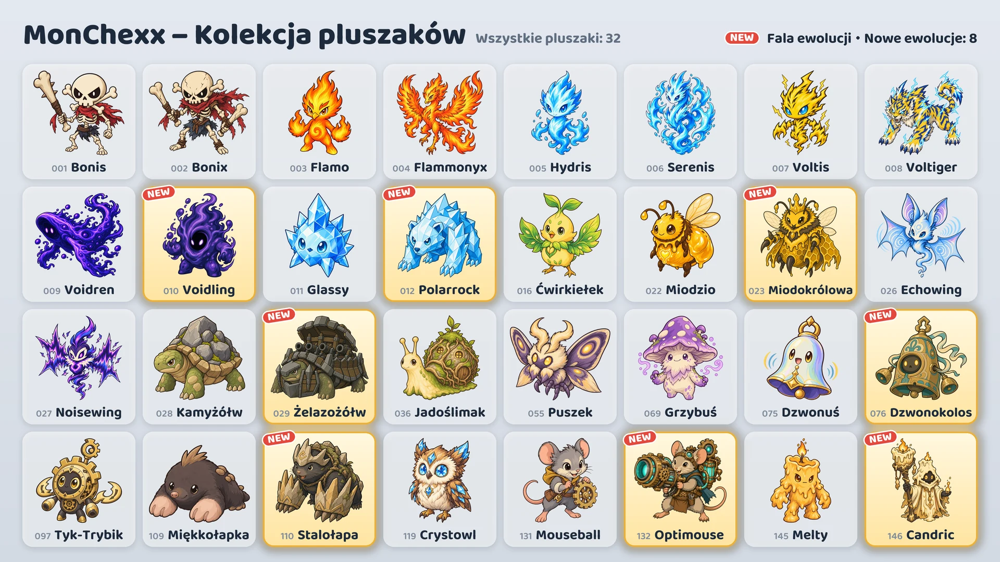

16 października w grze pojawia się osiem nowych ewolucji.

Osiem nowych ewolucji
- Voidling: ewolucja pluszaka Voidren · Tank
- Polarrock: ewolucja pluszaka Glassy · Tank / Wojownik
- Miodokrólowa: ewolucja pluszaka Miodzio · Wsparcie / Strzelec
- Żelazożółw: ewolucja pluszaka Kamyżółw · Tank
- Dzwonokolos: ewolucja pluszaka Dzwonuś · Tank / Wsparcie
- Stalołapa: ewolucja pluszaka Miękkołapka · Tank / Zabójca
- Optimouse: ewolucja pluszaka Mouseball · Strzelec
- Candric: ewolucja pluszaka Melty · Wsparcie / Strzelec
Jak je zdobyć
- Automaty z pluszakami (wydarzenie): W trakcie wydarzenia (16–24 października) każdy automat z pluszakami oprócz dwóch na końcach rzędu zawiera jedną z nowych ewolucji obok dwóch innych pluszaków. Po wydarzeniu nowe ewolucje trafiają do automatów tak samo często jak pozostałe pluszaki.
- Wymiana pluszaków: Wymień 10 duplikatów na wybranego pluszaka (Wymiana z wyborem) albo 3 duplikaty na losowego pluszaka (Losowa wymiana).
- Paczki pluszaków: Mogą z nich wypaść także nowe ewolucje.
Korzystanie z wyewoluowanych pluszaków
- Wyewoluowanego pluszaka zbierasz osobno, a gdy go masz, możesz od razu dodać go do drużyny.
- Na ekranie „Zbuduj drużynę” wybierz pluszaka i naciśnij Podstawowa lub Ewolucja, aby zmienić jego formę.
- Drużyna może mieć tylko jednego pluszaka z każdej linii ewolucji.
- Wyewoluowany pluszak awansuje niezależnie od swojej formy podstawowej.
Nowe pluszaki
Wartości „Ataku”, „Mocy magicznej” lub „maksymalnego Zdrowia” rosną wraz z poziomem pluszaka.
 Voidling · Tank · Zasięg 1
Voidling · Tank · Zasięg 1
- Pochłonięcie pustki: Zwiększa swoje maksymalne Zdrowie o sumę 200% Mocy magicznej i 3% maksymalnego Zdrowia z początku walki oraz odzyskuje Zdrowie równe temu przyrostowi. Następnie zadaje wszystkim wrogom wokół siebie (promień: 1 pole) obrażenia magiczne równe 20% swojego obecnego Zdrowia. Przyrost maksymalnego Zdrowia utrzymuje się do końca walki.
- Uczta pustki: Zyskuje 10 pkt Many za każdym razem, gdy wróg w pobliżu (promień: 4 pola) użyje umiejętności aktywnej.
 Polarrock · Tank/Wojownik · Zasięg 1
Polarrock · Tank/Wojownik · Zasięg 1
- Mroźne uderzenie: Zadaje obecnemu celowi obrażenia fizyczne równe 240% Ataku i zamraża go na 1,2 s. Zamrożony wróg nie może działać ani zyskiwać Many. Innym wrogom wokół celu (promień: 1 pole) zadaje obrażenia fizyczne równe 120% Ataku i nakłada na nich Szron, który zmniejsza ich Szybkość ataku o 15% na 8 s.
- Kryształowa skóra: Zmniejsza otrzymywane obrażenia magiczne o 20%, również te rozłożone w czasie. Zmniejszenie jest liczone po uwzględnieniu Odporności na magię.
 Miodokrólowa · Wsparcie/Strzelec · Zasięg 3
Miodokrólowa · Wsparcie/Strzelec · Zasięg 3
- Królewskie mleczko: Przywraca wszystkim swoim pszczołom robotnicom Zdrowie równe 10% ich maksymalnego Zdrowia i na 3 s zwiększa ich Szybkość ataku o 200%. Następnie, jeśli ma mniej pszczół, niż może mieć maksymalnie, przywołuje nowe pszczoły na wolne pola obok siebie (liczba pszczół: 1).
- Rój robotnic: Dowodzi pszczołami robotnicami (maks. liczba pszczół: 3). Statystyki pszczół rosną wraz z poziomem Miodokrólowej. Efekty działające na ograniczoną liczbę sojuszników nie wybierają pszczół. Co sekundę każda pszczoła otrzymuje obrażenia magiczne równe 4% swojego maksymalnego Zdrowia. Gdy Miodokrólowa zostanie pokonana, pszczoły wpadają w szał: obrażenia, które zadają i otrzymują, są mnożone przez 2.
 Żelazożółw · Tank · Zasięg 1
Żelazożółw · Tank · Zasięg 1
- Obrotowy ostrzał: Strzela z działa kolejno w różnych kierunkach: zaczyna od kierunku, w którym patrzy, i po każdym strzale obraca się o jeden kierunek przeciwnie do ruchu wskazówek zegara (liczba pocisków: 6). Każdy pocisk zadaje pierwszemu wrogowi w swoim kierunku (zasięg: 2 pola) obrażenia fizyczne równe 500% Ataku. Odstęp między pociskami wynosi 0,5 s i zmienia się wraz z Szybkością ataku. Podczas strzelania się nie porusza, a jeśli zostanie ogłuszony lub zamrożony, nie wystrzeli pozostałych pocisków. Nie zyskuje Many do końca ostrzału.
- Forteczna skorupa: Za każdego wroga wokół siebie (promień: 1 pole) zwiększa swój Pancerz i Odporność na magię o 35.
 Dzwonokolos · Tank/Wsparcie · Zasięg 1
Dzwonokolos · Tank/Wsparcie · Zasięg 1
- Bicie dzwonu: Zadaje wszystkim wrogom wokół siebie (promień: 2 pola) obrażenia magiczne równe 90% Mocy magicznej i nakłada na nich Prowokację na 2 s. W tym czasie wrogowie objęci Prowokacją atakują tylko jego i nie mogą zacząć używać umiejętności. Przez ten sam czas za każdym razem, gdy trafi go atak podstawowy wroga, zadaje wszystkim wrogom wokół siebie (promień: 2 pola) obrażenia magiczne równe 25% obrażeń tego ataku sprzed zmniejszenia przez Pancerz i tarcze. Nie zyskuje Many, dopóki Prowokacja nie minie.
- Rezonans: Za każdym razem, gdy inny sojusznik w pobliżu (promień: 2 pola) użyje umiejętności aktywnej, odzyskuje Zdrowie równe 50% Mocy magicznej.
 Stalołapa · Tank/Zabójca · Zasięg 1
Stalołapa · Tank/Zabójca · Zasięg 1
- Szturm z tunelu: Zakopuje się, usuwając z siebie wszystkie osłabienia, i przemieszcza się z 3-krotną Szybkością ruchu na wolne pole, wokół którego (promień: 1 pole) jest najwięcej wrogów. Tam zadaje wszystkim wrogom wokół siebie (promień: 1 pole) obrażenia fizyczne równe 500% Ataku. Pod ziemią nie można go trafić.
- Kamienne pazury: Zyskuje Pancerz równy 20% swojego Ataku.
- Zaczyna walkę z 0 pkt Many.
 Optimouse · Strzelec · Zasięg 4
Optimouse · Strzelec · Zasięg 4
- Działo laserowe: Przez 1,5 s ładuje działo laserowe skierowane na obecny cel (zasięg: 4 pola), po czym wystrzeliwuje laser (szerokość: 1 pole) aż do krańca boiska, zadając wszystkim wrogom na jego drodze obrażenia magiczne równe 1000% Ataku. Kierunek jest ustalany na początku ładowania; jeśli podczas ładowania zostanie ogłuszony lub zamrożony, strzał zostaje anulowany.
- Obwód rozgrzewający: Przy każdym ataku podstawowym zwiększa swoją Szybkość ataku o 15%. Ten efekt zwiększa Szybkość ataku maksymalnie o 100%, a użycie umiejętności aktywnej zeruje ten wzrost.
 Candric · Wsparcie/Strzelec · Zasięg 3
Candric · Wsparcie/Strzelec · Zasięg 3
- Niegasnący płomień: Oznacza znakiem na 5 s sojusznika z najniższym obecnym Zdrowiem (z wyjątkiem siebie). Candric daje też oznaczonemu sojusznikowi na ten sam czas tarczę równą 200% swojej Mocy magicznej. Gdy obrażenia bezpośrednie miałyby pokonać oznaczonego sojusznika, Candric przyjmuje na siebie 200% tych obrażeń, a sojusznik nie otrzymuje ich wcale. Utrzymuje naraz tylko jeden znak, a znak nie chroni przed pokonaniem przez obrażenia rozłożone w czasie.
- Topniejący wosk: Otrzymywane obrażenia bezpośrednie, które przejdą przez tarczę, odbierają mu Zdrowie nie od razu, lecz stopniowo przez 4 s. Obrażenia rozłożone w czasie otrzymuje bez opóźnienia.
Mecze rankingowe i odznaki
- Przeciwnicy w meczach rankingowych również używają nowych ewolucji.
- Osiem nowych ewolucji nie liczy się do odznaki „Kolekcja Sezonu 1”.
- Odznakę „Ekspert od ewolucji” zdobywa się za posiadanie 5 różnych wyewoluowanych pluszaków. Jest teraz 13 wyewoluowanych pluszaków.
Zmiany balansu wszystkich pluszaków znajdziesz na liście zmian „Balans i system walki”.